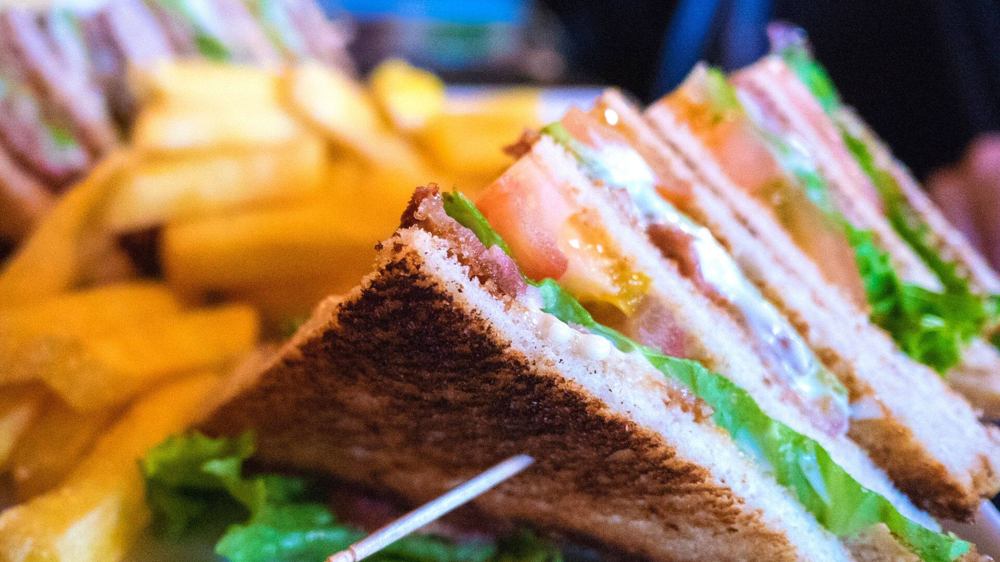

Club-sandwich

Description
Veg club sandwich can be enjoyed fo a lunch or a meal.
There are so many kinds of club sandwiches served across
the globe which are commonly the meat versions.The club sandwich
is completely vegetarian including the mayo.
Ingredients
- Bread
- cabbage
- onions
- capsicum
- carrots
- Potato
Steps
- wash and peel potato,slice it to 1/4 inch pieces.Boil them in a pan until just done. Drainwater and set aside
- Toast the bread slices crisp. You can also do this in a oven or toaster.
- Add a tsp of oil and roast potatoes on both sides till
crispy.You can also sprinkle some spice powder if you like.Set these aside.
- Add another tbsb of oil to the pan.Add garlic and salute for a minute.
- Add veggies and stir fry on a high flame for 3 to 4 min. without burning.
- Add salt,chili flakes and pepper. Mix and set aside to cool a bit.
- ASpread mayo or cream cheese or hung curd as desired.
- On the first slice place lettuce,potatoes over it,then sprinkle some pepper and salt if noy used earlier.Then Tomato.
- On another slice,place lettuce and then some stir fried veggies.
- Begin to assemble.Bread with Tomato on the Bottom.
- Serve the sandwich within 2 hours.
Top of page
main page